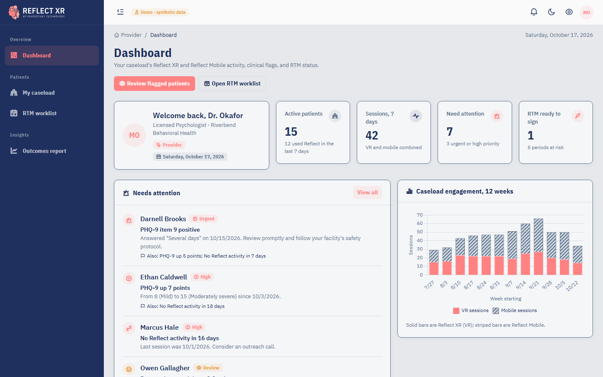

Reflect XR (VR art-making) and Reflect Mobile give patients creative tools for emotional processing between therapy sessions. Their clinicians can't see any of it. Progress is judged from what a patient remembers to report. Remote Therapeutic Monitoring (RTM) could fund this follow-up, but only if the practice can show the required data days, management time and live contact.
A working, HIPAA-minded Provider area inside the Reflect XR web app. It's built to PTI's extension spec so it can merge with a file copy, not a rewrite. It pulls product analytics and clinical data together for each patient and turns them into three things a clinician acts on:

| Screen | For the clinician |
|---|---|
| Dashboard | Caseload KPIs, one-row-per-patient attention list, 12-week engagement, periods closing this week |
| My caseload | Sortable list: activity, VR/mobile split, data-day progress, RTM status, flags |
| Patient details | Tabs: Overview (insights, AI brief, charts), Sessions, Therapeutic response, RTM, Notes, Care plan, Access log |
| RTM worklist | Every current period with the reason it's at risk and the next step |
| Outcomes report | Mood change by module, PHQ-9 change by engagement level, VR vs mobile (correlational) |
| Forms | Log time (with live-call method), add note, edit care plan (read-only view first) |
Flags are rules, not black boxes. Each one states its threshold and evidence, for example "PHQ-9 up 6 points: from 9 (mild) to 15 (moderately severe) since 10/6/2026". Severity bands follow the published PHQ-9 and GAD-7 cut-offs. A positive item 9 raises an urgent banner. The banner reminds users that the dashboard isn't real-time crisis monitoring and that patients are directed to 988 in the apps.
AI where it's safe. The pre-session brief is rule-based by default. With an API key, Claude writes it from a de-identified summary: age band, "days ago", aggregates and flag titles. It never sees a name, MRN, date or patient free text, and a unit test enforces this. Failures fall back to the rules, and output is labelled "AI draft".
Every screen was run in a real browser in light, dark, color-blind and 125% text modes, at phone, tablet and desktop widths, with zero console errors or CSP violations. An End User is denied access, another provider's patient returns 404, and forms reject invalid input.
module_start, creation_saved, module_complete, module_exit) to Firebase Analytics, under a pseudonymous key only. A backend job queries the BigQuery export every 15 minutes and maps events into EngagementSession rows. The demo runs the same mapper on synthetic GA4-shaped events.Observation rows with LOINC codes where they exist. Future therapeutic-response and RPM data (heart rate 8867-4, sleep, HRV) become new codes with Source = Device, with no schema change.PatientAppLink: patient ↔ pseudonymous app key, plus the patient's data-sharing consent. It's stored only in Azure SQL, so analytics alone identify no one.| Code | What the app checks |
|---|---|
98975 | Setup and education recorded in this period (once per episode) |
98986 / 98978 | 2-15 / 16-30 qualifying data days in the 30-day period |
98979 / 98980 | 10-19 / 20+ management minutes in the calendar month, with a real-time interactive call |
98981 | Each additional full 20 minutes |
Each period is on track, at risk, ready to sign or signed, with plain-English reasons such as "Needs 4 more data days in the next 9 days". The RTM tab reproduces the brief's monitoring-status table: data days, sessions, engagement minutes, therapeutic-response entries, provider reviews, patient communications, management time and documentation status. Thresholds sit in one config record, and the screens label the results as decision support for billing review.
no-store, and every POST has anti-forgery protection.PrepareData / PrepareDataForSave), and repository interfaces with in-memory stand-ins that EF Core replaces.BaseEntity, ICurrentUserService, EntityNotFoundException), the brand tokens and IBM Plex. Light/dark, color-blind and text-size modes, with no colors hard-coded in our screens.string?.docs/API.md). Add the four app events.ProviderOnly to the real role and add the repositories to IUnitOfWork. Swap the brief to PTI's OpenAI service if preferred, under a BAA.